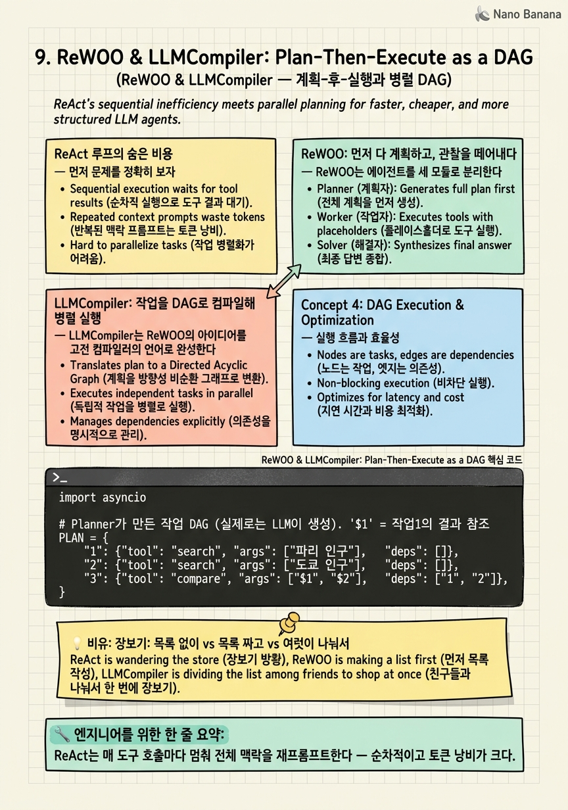

ReWOO & LLMCompiler: Plan-Then-Execute as a DAG

🎯 학습 목표
- ReAct식 인터리빙 루프의 비효율(반복 재프롬프트, 순차성)을 정량적으로 이해한다
- ReWOO의 Planner-Worker-Solver 분리와 관찰-추론 디커플링을 설명한다
- LLMCompiler의 DAG 컴파일과 병렬 함수 호출 원리를 안다
- 언제 순차 루프 대신 계획-후-실행 그래프가 유리한지 판단한다
- 이 두 논문이 왜 framework→graph 전환의 성능 논거인지 설명한다
2장 ReAct의 루프에는 숨은 비용이 있다. 매 스텝마다 '생각 → 도구 호출 → 멈춤 → 결과 받기 → 다시 전체 맥락으로 재프롬프트'를 반복한다. 도구를 열 번 부르면 LLM을 열 번 (매번 전체 맥락과 함께) 호출한다. 순차적이라 느리고, 재프롬프트가 반복돼 토큰이 낭비된다.
ReWOO(Xu et al., EMNLP 2023 Findings)의 통찰은 이렇다 — 추론과 관찰을 분리하라(Reasoning WithOut Observation). 도구 결과를 볼 때마다 매번 추론을 다시 하지 말고, 계획 전체를 처음에 한 번에 세운다. Planner가 서로 연결된 도구 호출 계획을 짜고, Worker들이 실행하고, Solver가 결과를 종합한다. 도구 결과를 기다리며 LLM을 반복 호출하는 낭비가 사라진다(논문은 최대 5배 토큰 효율을 노린다).
LLMCompiler(Kim et al., ICML 2024)는 이를 컴파일러 원리로 밀어붙인다. 작업을 DAG(방향성 비순환 그래프) 로 분해하고, 의존성이 없는 작업들을 병렬 실행한다. ReAct 대비 최대 3.7배 빠르고 6.7배 저렴하다고 보고한다. 이 장에서 우리는 '순차 루프를 명시적 작업 그래프로 대체하면 무엇을 얻는가'를 성능의 언어로 배운다 — framework에서 graph로 넘어가는 가장 실용적인 이유다.
핵심 내용
ReAct 루프의 숨은 비용
먼저 문제를 정확히 보자. LLMCompiler 논문은 기존 방식을 이렇게 진단한다.
"current methods for function calling often require sequential reasoning and acting for each function which can result in high latency, cost, and sometimes inaccurate behavior."
ReWOO도 같은 곳을 찌른다.
"an LLM reasons to call an external tool, gets halted to fetch the tool's response, and then decides the next action ... often leads to huge computation complexity from redundant prompts and repeated execution."
구체적으로 세 가지 병이다. (1) 순차성 — 서로 독립적인 도구 호출(예: '파리 날씨'와 '도쿄 날씨')도 한 번에 하나씩 순서대로 한다. 병렬로 하면 될 것을. (2) 반복 재프롬프트 — 매 스텝마다 누적된 전체 맥락을 다시 LLM에 밀어넣어, 같은 정보를 몇 번씩 재처리한다. (3) 관찰 결합 — 추론이 관찰에 매 스텝 묶여 있어, 도구가 느리면 전체가 느려진다.
이 병들은 작업이 커질수록 심해진다. 도구 호출이 스무 번인 작업이라면, ReAct는 스무 번의 순차 LLM 호출 + 스무 번의 재프롬프트다. 여기서 '루프를 미리 계획된 구조로 바꾸면 이 낭비를 없앨 수 있지 않을까?'라는 질문이 나온다. 그 답이 ReWOO와 LLMCompiler다.
ReWOO: 먼저 다 계획하고, 관찰을 떼어내다
ReWOO는 에이전트를 세 모듈로 분리한다.
Planner = 문제를 받아, 필요한 모든 추론·도구 호출을 처음에 한 번에 계획한다. 이때 아직 도구를 실행하지 않는다. 대신 결과가 들어갈 자리를 변수로 남긴다 — #E1, #E2 같은 증거 변수(evidence variable). 예: "Plan: 파리 인구를 검색 → #E1. Plan: 도쿄 인구를 검색 → #E2. Plan: #E1과 #E2를 비교."
Worker = Planner가 남긴 도구 호출들을 실제로 실행해 #E1, #E2에 값을 채운다.
Solver = 채워진 증거들을 종합해 최종 답을 낸다.
"a modular paradigm ReWOO (Reasoning WithOut Observation) that detaches the reasoning process from external observations, thus significantly reducing token consumption."
핵심은 추론(Planner)이 관찰(Worker)로부터 분리된 것이다. ReAct는 관찰을 볼 때마다 추론을 처음부터 다시 했지만, ReWOO는 추론을 딱 한 번(계획 시)만 한다. 그래서 재프롬프트 낭비가 사라진다. 계획이 이미 '서로 연결된 도구 호출들의 구조'라는 점에 주목하라 — 이건 사실상 작업 그래프의 초안이다. ReWOO는 순차 루프에서 명시적 계획 구조로 가는 첫 걸음이다. 물론 대가도 있다: 계획을 미리 다 세우므로, 중간 결과에 따라 경로가 크게 바뀌어야 하는 문제에는 ReAct의 적응성이 더 낫다.
LLMCompiler: 작업을 DAG로 컴파일해 병렬 실행
LLMCompiler는 ReWOO의 아이디어를 고전 컴파일러의 언어로 완성한다. 프로그램을 컴파일할 때 컴파일러가 명령어 간 의존성을 분석해 병렬화하듯, 도구 호출들을 그렇게 다룬다. 세 부품이다.
Function Calling Planner = 작업을 DAG로 분해한다. 각 노드는 도구 호출, 엣지는 의존성이다. "a DAG of tasks with their inter-dependencies."
Task Fetching Unit = 의존성이 해소된(입력이 준비된) 작업을 골라 실행 큐로 보낸다.
Executor = 서로 독립인 작업들을 병렬로 실행한다. "executing these tasks in parallel."
핵심은 병렬성이다. '파리 날씨'와 '도쿄 날씨'는 서로 의존하지 않으니 동시에 실행한다. ReAct라면 순서대로 했을 것을. 그 결과가 인상적이다.
| 지표 | ReAct 대비 LLMCompiler |
|---|---|
| 지연(latency) | 최대 3.7배 빠름 |
| 비용(cost) | 최대 6.7배 저렴 |
| 정확도 | 약 9% 향상 |
정확도까지 오르는 이유는, 계획을 구조적으로 세우면 ReAct식 즉흥 루프가 빠뜨리는 단계나 중복 호출이 줄기 때문이다. 여기서 결정적 인식이 온다 — 에이전트의 흐름을 DAG(그래프)로 명시하면, 성능·비용·정확도가 모두 좋아진다. 이것이 loop에서 graph 엔지니어링으로 넘어가는 가장 강력한 실용적 논거다. 8장이 개념의 다리였다면, 9장은 성능 수치로 그 다리를 건너는 이유를 준다.
💡 비유로 이해하기
저녁 파티를 위해 열 가지 재료를 사야 한다. 세 가지 방식을 보자.
ReAct 방식은 목록 없이 마트에 가는 것이다. 진열대 앞에서 '음, 파스타를 살까? 그럼 소스도 필요하겠네. 소스를 집었으니 이제 뭐가 필요하지?' 하며 매번 처음부터 다시 생각한다. 한 품목 담을 때마다 멈춰서 전체를 재고한다. 재료 하나 사고 계산대까지 갔다가, 아 치즈를 깜빡했네 하고 되돌아온다. 열 번을 이렇게 순차로 반복하니 하루가 다 간다.
ReWOO 방식은 집에서 장보기 목록을 통째로 먼저 짜는 것이다. '파스타, 소스, 치즈, 마늘…' 열 개를 다 적고(계획), 각 재료가 어느 코너에 있는지 표시해둔다(증거 변수). 마트에선 생각 없이 목록대로 담기만 하면 된다. 진열대 앞에서 매번 고민하는 낭비가 사라진다.
LLMCompiler 방식은 목록을 짜되, 가족 세 명이 코너를 나눠 동시에 장을 보는 것이다. 채소 담당, 유제품 담당, 정육 담당이 병렬로 움직인다. 서로 의존하지 않는 품목(채소와 우유)은 동시에 담기니 시간이 3분의 1로 준다. 물론 '고기 상태를 보고 메뉴를 바꿀지 결정' 같은 의존 관계는 순서를 지킨다(DAG).
교훈은 명확하다 — 살 게 몇 개 안 되면 목록 없이도 괜찮다. 하지만 품목이 많고 서로 독립적일수록, 미리 계획하고(ReWOO) 병렬로 나누는(LLMCompiler) 방식이 압도적으로 빠르고 싸다. 에이전트의 도구 호출도 정확히 그렇다.
💻 코드 예시
LLMCompiler의 핵심인 'DAG로 계획하고 의존성 없는 작업을 병렬 실행'을 구현해보자. Planner가 작업 그래프를 만들고, 실행기는 입력이 준비된 작업들을 동시에 돌린다. 2장의 순차 while 루프와 대조하면, 흐름이 '한 줄'에서 '의존성 그래프'로 바뀐 게 핵심이다.
import asyncio
# Planner가 만든 작업 DAG (실제로는 LLM이 생성). '$1' = 작업1의 결과 참조
PLAN = {
"1": {"tool": "search", "args": ["파리 인구"], "deps": []},
"2": {"tool": "search", "args": ["도쿄 인구"], "deps": []},
"3": {"tool": "compare", "args": ["$1", "$2"], "deps": ["1", "2"]},
}
async def execute_dag(plan, tools):
results, pending = {}, dict(plan)
while pending:
# 1) 의존성이 모두 해소된 작업들을 한 번에 고름 (Task Fetching Unit)
ready = [tid for tid, t in pending.items()
if all(d in results for d in t["deps"])]
async def run(tid):
t = pending[tid]
args = [results[a[1:]] if str(a).startswith("$") else a
for a in t["args"]] # $1 → 작업1의 실제 결과로 치환
return tid, await tools[t["tool"]](*args)
# 2) 준비된 독립 작업들을 병렬 실행 (Executor)
done = await asyncio.gather(*[run(tid) for tid in ready])
for tid, out in done:
results[tid] = out
del pending[tid] # 완료 → 큐에서 제거
return results
# 작업 1·2(파리·도쿄 검색)는 서로 독립 → 동시에 실행
# 작업 3(비교)은 1·2에 의존 → 둘이 끝난 뒤 실행 (DAG가 순서를 보장)
이 코드가 순차 루프를 그래프로 바꾼 정수다. (1) 의존성 기반 스케줄링 — ready는 '입력이 다 준비된' 작업만 고른다. 작업 1·2는 deps가 비었으니 즉시 실행 가능, 작업 3은 1·2가 끝나야 한다. 흐름이 코드 순서가 아니라 데이터 의존성으로 결정된다. (2) 병렬 실행 — asyncio.gather가 독립 작업(파리·도쿄 검색)을 동시에 돌린다. ReAct라면 순차로 두 번 걸렸을 시간이 한 번으로 준다 — 여기서 3.7배 latency 이득이 나온다. (3) 결과 참조($1) — Planner가 남긴 변수 참조가 ReWOO의 증거 변수(#E1)와 같은 발상이다. 계획이 실행과 분리돼 있다. 이 execute_dag를 노드마다 조건 분기·상태·순환까지 갖도록 일반화하면, 그게 바로 10장의 LangGraph다. 순차 루프 → 작업 DAG → 완전한 상태 그래프로 이어지는 마지막 계단이다.
🏭 현업에서의 평가
✅ 시니어가 보는 것
- ReAct 순차 루프의 지연·토큰 비용을 정량적으로 분석
- 추론-관찰 분리(ReWOO)와 DAG 병렬화(LLMCompiler)의 원리를 정확히 설명
- 독립 작업 병렬화가 latency·cost를 어떻게 줄이는지 이해
- 계획-후-실행의 약점(중간 결과에 따른 경로 변경이 어려움)과 ReAct의 적응성을 저울질
⚠️ 레드 플래그
- ReAct 루프의 반복 재프롬프트 비용을 인지하지 못함
- 모든 작업을 DAG로 미리 계획하려 함(적응이 필요한 개방형 작업에도)
- 병렬화 가능한 독립 작업과 순차 의존 작업을 구분 못 함
- 성능 수치(3.7x, 6.7x)를 맥락 없이 절대적으로 신뢰
🎤 예상 인터뷰 질문
- ReAct 스타일 인터리빙 루프가 왜 느리고 비싼지, 도구 호출이 20개인 작업으로 설명해보라.
- ReWOO의 계획-후-실행이 ReAct보다 불리한 상황은 언제이며 왜인가?
- 에이전트 작업을 DAG로 병렬화할 때, 무엇이 병렬 가능하고 무엇이 순차인지 어떻게 판별하는가?
✨ 핵심 요약
인터리빙 루프의 비용
ReAct는 매 도구 호출마다 멈춰 전체 맥락을 재프롬프트한다 — 순차적이고 토큰 낭비가 크다.
추론-관찰 분리
ReWOO는 계획을 처음에 한 번에 세워 관찰과 추론을 떼어내, 반복 재프롬프트를 없앤다.
Planner-Worker-Solver
계획(증거 변수) → 실행 → 종합의 3모듈 분리가 ReWOO의 골격이다.
작업 DAG
LLMCompiler는 도구 호출을 의존성 DAG로 컴파일한다 — 노드는 작업, 엣지는 의존성.
병렬 실행의 이득
독립 작업을 동시에 돌려 ReAct 대비 최대 3.7x 빠르고 6.7x 저렴, 정확도 ~9% 향상.
구조가 성능이다
흐름을 명시적 그래프로 만들면 성능·비용·정확도가 모두 좋아진다 — loop→graph의 실용 논거.
적응성과의 트레이드오프
미리 계획하면 빠르지만, 중간 결과로 경로가 크게 바뀌는 문제엔 ReAct의 적응성이 낫다.